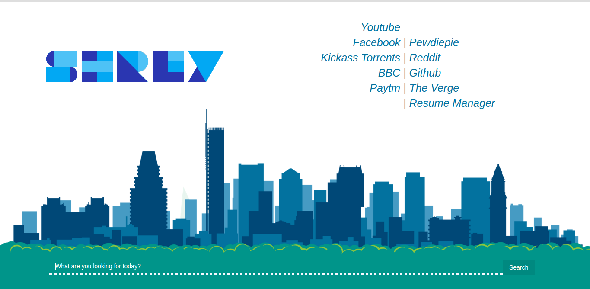
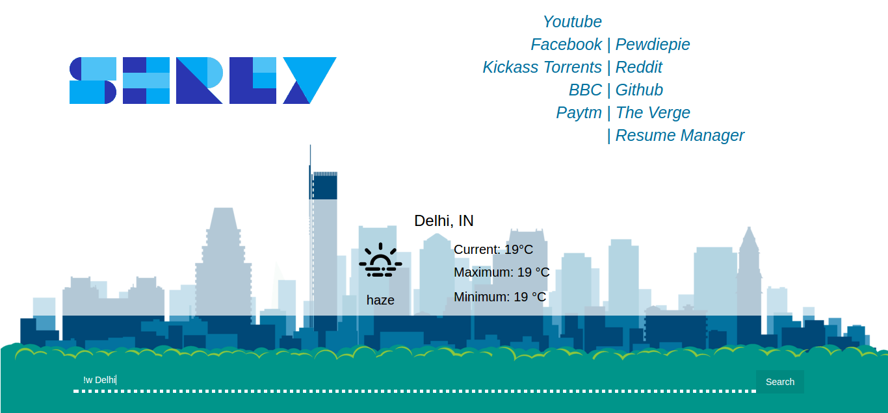
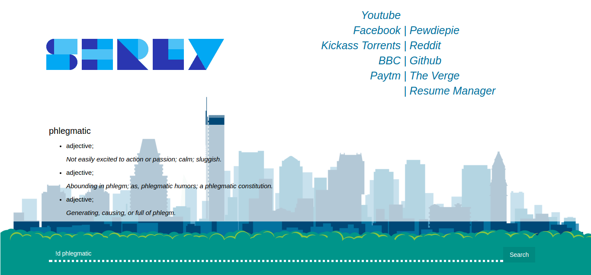

If you are like me, you like to quick access to websites and information with in a arms length, then this start page is for you.

A blend of minimalism and in-your-face design, this start page provides you with the shortcuts for the following:
!r : Reddit search.
!k : Kickass search.
!y : YouTube search.
so syntax for search would be so !y search_query will search YouTube for "search_query"
As of now there are 2 more additional features :
- !w : Weather info will be displayed on the same page

- !d : Dictionary queries are displayed on the same page
 (Ah the irony)
Weather information obtained from OpenWeather.
Dictionary data obtained from Wikitionary.
Weather icons: Erikflowers Github
Name gif made using FORM Type Maker
Check out the code